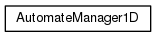
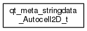
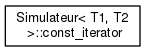

Autocell
1.0
Simulation d'automates cellulaires
Page principale
Pages associées
Classes
Fichiers
Liste des classes
Index des classes
Hiérarchie des classes
Membres de classe
Hiérarchie des classes
Aller à la hiérarchie des classes en mode texte



Généré par
1.8.11
 1.8.11
1.8.11